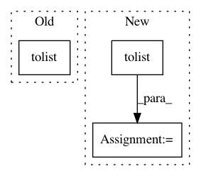

1fb34b8bcea9f4096bbd41bfb8f6556cd129e13f,examples/analyzer.py,,analyze_file,#,34
Before Change
// Subsample the signal for vis purposes
A["signal"] = scipy.signal.decimate(y, len(y) / 1024, ftype="fir").tolist()
A["links"] = self_similarity(np.vstack([np.array(A["chroma"]).T, np.array(A["timbres"]).T])).tolist()
return A
if __name__ == "__main__":
After Change
links, segs = structure(np.vstack([np.array(A["timbres"]).T, np.array(A["chroma"]).T]))
A["links"] = links.tolist()
A["segments"] = segs.tolist()
return A
if __name__ == "__main__":
In pattern: SUPERPATTERN
Frequency: 4
Non-data size: 3
Instances
Project Name: librosa/librosa
Commit Name: 1fb34b8bcea9f4096bbd41bfb8f6556cd129e13f
Time: 2013-06-05
Author: brm2132@columbia.edu
File Name: examples/analyzer.py
Class Name:
Method Name: analyze_file
Project Name: ellisdg/3DUnetCNN
Commit Name: ab0ff941fe4f6469730a8711d40eb32fbc9eacdf
Time: 2017-11-17
Author: david.ellis@unmc.edu
File Name: unet3d/model.py
Class Name:
Method Name: compute_level_output_shape
Project Name: craffel/mir_eval
Commit Name: 471f726101e828550cbcda9029f3f8b32736d80f
Time: 2014-07-06
Author: craffel@gmail.com
File Name: mir_eval/util.py
Class Name:
Method Name: intervals_to_samples
Project Name: scikit-learn-contrib/categorical-encoding
Commit Name: eea525b1a76f1166e87582a5312c952c1a093766
Time: 2020-03-08
Author: p.gijsbers@tue.nl
File Name: category_encoders/ordinal.py
Class Name: OrdinalEncoder
Method Name: ordinal_encoding